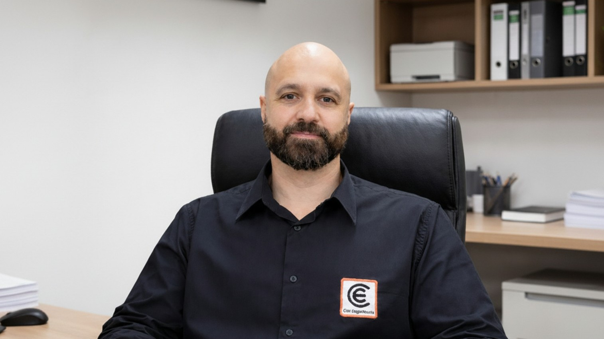
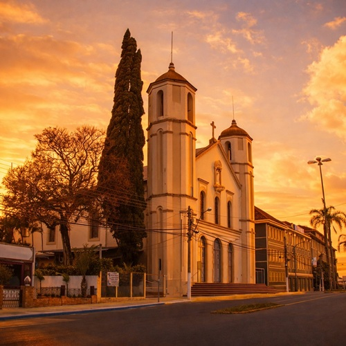
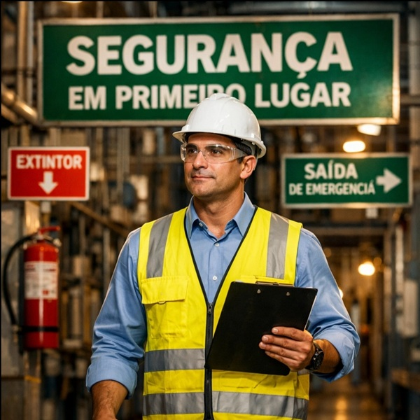

Análises de risco e laudos técnicos para empresas e indústrias em Gravataí.
Com ART do engenheiro de segurança do trabalho Dario Cini, CREA-RS 211.450.
Telefone: (51) 99961-3451
E-mail: contato@ciniengenharia.com.br

A área de atuação está diretamente relacionada aos principais polos produtivos e empresariais do município. O complexo industrial do entorno da GM e as estruturas do Distrito Industrial concentram operações de grande porte e alto nível de exigência técnica.
Ao longo da BR-290 e da RS-118 estão instalados centros logísticos e unidades que sustentam o fluxo econômico da cidade. A região de Neópolis reúne estabelecimentos corporativos e serviços ligados à atividade industrial.
Esses pontos formam o núcleo onde estão as operações com maior capacidade de investimento e demanda técnica. É nesse cenário que a segurança do trabalho se insere dentro da dinâmica econômica de Gravataí.

Complexo automotivo e sistemistas da GM Na instalação de novas células robotizadas, adequação de linhas de montagem, intervenções em painéis, testes de comissionamento e manutenção programada, a análise de riscos NR-12 e o controle de energias garantem produção sem parar o turno.
Distrito Industrial e fabricantes de componentes Entrada de injetoras, prensas, transportadores e automação para ganho de escala exige validação dos circuitos de segurança, inventário de máquinas e laudo de conformidade para atender montadoras.
Centros logísticos na BR-290 (Freeway) Operações com docas eletrificadas, esteiras, carregadores de bateria e armazenagem de alto giro pedem organização técnica do fluxo e procedimentos seguros de intervenção elétrica.
Empresas com contratos just-in-time Quando auditorias cobram prontuário NR-10, ART e rastreabilidade das adequações para manter fornecimento contínuo, a engenharia de segurança deixa de ser suporte e passa a ser requisito direto para faturar em Gravataí.
Dario Cini, engenheiro de segurança do trabalho com mais de 10 anos de experiência em ambientes industriais e corporativos. Tem trajetória profissional direcionada à segurança ocupacional, com atuação baseada na prevenção de acidentes, na análise de riscos e no atendimento às Normas Regulamentadoras.
CREA: RS 211.450 — consulta pública no CREA-RS
Cini Engenharia — CNPJ 25.268.313/0001-56 — Consultar CNPJ
LinkedIn: Dario Cini — Ver perfil
Em Gravataí, a ART funciona como proteção legal em atividades técnicas de engenharia de segurança do trabalho, por formalizar a responsabilidade técnica pela execução da atividade, estabelecendo o elo jurídico entre o serviço e o engenheiro responsável.
A ART atua como proteção legal ao:
Com a emissão da ART, as atividades de engenharia no município passam a ter proteção legal e respaldo profissional.

A atuação com o Prontuário das Instalações Elétricas conforme a NR-10 está inserida no complexo automotivo e nas indústrias sistemistas do município. A vivência em plantas de produção seriada envolve o levantamento técnico de painéis elétricos em linhas automatizadas de montagem.
Nas empresas de logística e distribuição, a organização do PIE contempla centros de carga, docas e sistemas de alimentação elétrica contínua. O diagnóstico em subestações e cabines primárias considera a confiabilidade energética dos processos industriais.
A interface com a manutenção elétrica valida procedimentos de intervenção em equipamentos energizados. O mapeamento dos circuitos atende operações com alto ritmo produtivo e funcionamento em turnos.
A análise documental integra diagramas unifilares, especificações técnicas e registros de inspeção. A consolidação do prontuário garante rastreabilidade das condições de segurança das instalações.
A experiência prática acompanha a dinâmica industrial característica do polo produtivo de Gravataí.

Na maioria das vezes, a contratação começa com uma situação comum do dia a dia da empresa: uma exigência de cliente, uma fiscalização, a compra de uma máquina ou a necessidade de organizar a parte de segurança.
Você apresenta sua necessidade e recebe uma orientação clara sobre o que realmente precisa ser feito. Sem complicação e sem soluções genéricas.
O engenheiro avalia a sua operação e mostra o caminho mais seguro para atender às exigências e manter a empresa funcionando normalmente.
Laudos, documentos e adequações passam a ter condução técnica, trazendo segurança para a empresa e para o gestor.

Gravataí é um dos maiores polos industriais do Rio Grande do Sul, com o Complexo Automotivo da General Motors e suas sistemistas, além de indústrias como Dana e PPG. O município tem unidade própria do SENAI, instalada no Distrito Industrial em 26,7 mil m², com formação em metalmecânica, eletroeletrônica, automação e mecatrônica, e conta com o Campus Gravataí do IFSul. Abaixo, os órgãos, entidades e serviços ligados à segurança do trabalho na cidade.
SENAI Gravataí — Centro de Formação Profissional Ney Damasceno Ferreira | ACIGRA — Associação Comercial, Industrial e de Serviços de Gravataí | IFSul Campus Gravataí | Complexo Automotivo General Motors — Gravataí | Câmara Municipal de Gravataí | Corpo de Bombeiros Militar do RS | Consulta de PPCI — CBMRS
1. COMO O MODELO DE PRODUÇÃO EM LARGA ESCALA DAS INDÚSTRIAS DE GRAVATAÍ INFLUENCIA A ESTRUTURAÇÃO DOS SISTEMAS DE SEGURANÇA EM GRAVATAÍ?
Processos com alto volume e cadência contínua exigem ambientes operacionais previsíveis, onde a segurança do trabalho é integrada aos indicadores de eficiência, disponibilidade de linha e estabilidade produtiva.
2. DE QUE FORMA A PRESENÇA DE CADEIAS PRODUTIVAS INTERLIGADAS ALTERA A GESTÃO DOS RISCOS OCUPACIONAIS?
Empresas conectadas a fornecedores e clientes em fluxo sincronizado precisam manter padrões operacionais uniformes, fazendo com que a segurança esteja alinhada à rastreabilidade dos processos e à confiabilidade das operações.
3. COMO A OPERAÇÃO EM MÚLTIPLOS TURNOS IMPACTA O PLANEJAMENTO DAS CONDIÇÕES SEGURAS DE TRABALHO?
Ambientes com funcionamento ininterrupto exigem padronização de procedimentos, controle técnico das intervenções e gestão consistente das rotinas para garantir o mesmo nível de segurança em todos os horários de operação.
4. QUAL É O IMPACTO DO ALTO NÍVEL DE AUTOMAÇÃO INDUSTRIAL NA ORGANIZAÇÃO DOS AMBIENTES PRODUTIVOS?
A automação reduz a exposição direta do trabalhador ao processo, mas aumenta a necessidade de controle das interfaces de acesso, setup, inspeção e manutenção, que passam a concentrar as etapas críticas de intervenção.
5. COMO A LOCALIZAÇÃO ESTRATÉGICA DE GRAVATAÍ NO EIXO METROPOLITANO INFLUENCIA A DINÂMICA DAS EMPRESAS?
A conexão com importantes corredores logísticos amplia o fluxo de materiais e pessoas, exigindo sincronização entre recebimento, produção e expedição para manter a continuidade operacional.
6. DE QUE MANEIRA AS AUDITORIAS DE CLIENTES E CERTIFICAÇÕES IMPACTAM A ABORDAGEM DA SEGURANÇA DO TRABALHO NAS INDÚSTRIAS LOCAIS?
Empresas inseridas em cadeias de fornecimento estruturadas precisam demonstrar controle técnico sobre seus processos, fazendo com que a segurança ocupacional esteja diretamente associada à manutenção de contratos e à competitividade no mercado.
7. COMO A EXPANSÃO INDUSTRIAL DO MUNICÍPIO MODIFICA A FORMA DE IMPLANTAÇÃO DE NOVOS PROCESSOS PRODUTIVOS?
A introdução de novas tecnologias e layouts em plantas já consolidadas exige compatibilização entre sistemas existentes e novas demandas operacionais, garantindo evolução produtiva sem comprometer a estabilidade das operações.